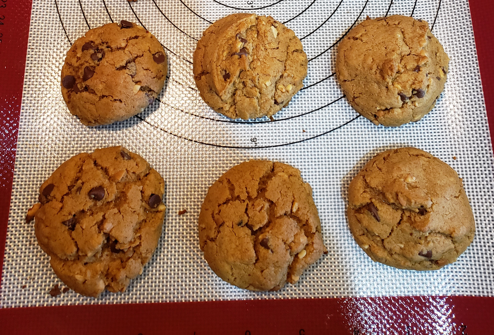

Peanut Butter Cookies

Description
Easy, chewy flourless peanut butter cookies. This simple, tasty recipe yields 12 to 16 cookies, but is so simple that it can be doubled (or tripled!) easily.
Ingredients
- 1 cup peanut butter
- 1/2 cup white sugar
- 1/2 cup packed brown sugar
- 1 egg
- 1 vanilla teaspoon extract
- 1/2 teaspoon baking soda
- 1/2 cup chocolate chips
Steps
- Preheat oven to 350 degrees F (175 degrees C).
- Beat peanut butter, white sugar, and brown sugar together in a large bowl with an electric mixer until smooth. Stir egg, vanilla extract, and baking soda into peanut butter mixture; stir in chocolate chips.
- Drop mixture by small rounded spoonfuls onto a baking sheet about 2 inches apart.
- Bake in the preheated oven until cookies are flattened and golden, about 8 minutes.
Return to Main Page